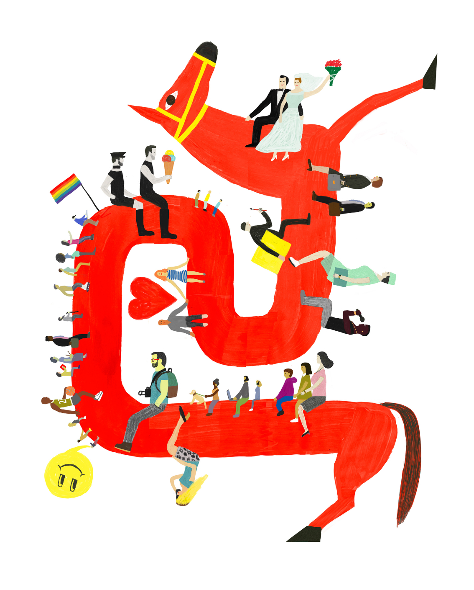

2017-2018
годовой отчет

Съёмка фотопроекта Atlas-2018
Группа по концентративному расслаблению
Лекция Мехти Ализаде «Как помочь своим близким, живущим с ВИЧ»
В ноябре в Открытом пространстве Фонда состоялись съемки в рамках проекта Atlas-2018, посвященному людям, живущим с ВИЧ по всему миру.
Также запустилась группа по концентративному расслаблению для ВИЧ-положительных людей и прошла лекция Мехти Ализаде о том, как действительно можно помочь своим близким, если у них ВИЧ.
Каждый ВИЧ-положительный проходит период принятия диагноза. Мы решили дать слово четырем разным людям, которые рассказали нам о своем опыте принятия и показали своим примером, что ВИЧ - это не страшно.
В предверии Дня борьбы со СПИДом по всей стране прошли уроки, посвященные профилактике ВИЧ. СПИД.ЦЕНТР разобрался, в чем плюсы и минусы этой инициативы и объяснил, почему нельзя говорить о профилактике не используя слово «презерватив».
Также в предверии 1 декабря ЮНЭЙДС запустило кампанию «Мое здоровье – мое право», посвященную проблемам, с которыми сталкиваются люди со всего мира при реализации своего законного права на здоровье.
В преддверии Всемирного дня борьбы со СПИДом, который пройдёт 1 декабря, ЮНЭЙДС начинает кампанию "Мое здоровье – мое право". Она призвана обратить внимание на проблемы, с которыми сталкиваются люди со всего мира при реализации своего законного права на здоровье.
Во всем и мире, порой и в России, происходят события, которые малыми шагами приближают нас к победе над эпидемией, но все же никуда не уходят и отрицательные примеры.
Потрачено на поддержание и работу сайтов SPID.CENTER и NOONELEFTBEHIND.RU
В эту сумму входят зарплаты редакции человек, а также всех журналистов, работающих над производством контента для наших сайтов: они ежедневно собирают самую свежую информацию, делают для вас новости, статьи и переводы, а также создавая медиа-материалы.
Также эта цифра включает в себя работу агентства Charmer, которое разработало для нас сайты SPID.CENTER и NOONELEFTBEHIND.RU
Уже 34 тысячи человек в Фейсбуке и 5 тысяч ВКонтакте ежедневно читает наши посты и делится ими со своими друзьями.
тут соцсети
Было потрачено на организацию мероприятий фонда. В них входят еженедельные лекции, группы поддержки для ВИЧ-положительных и трансгендеров, арт-терапия, пятничные кинопоказы и игротеки, йога и другие мероприятия которые ежедневно проходят в нашем Открытом пространстве.
Стоила аренда нашего офиса и Открытого пространства, где проходят все наши мероприятия, а также работает редакция наших сайтов.
Это содержание самого фонда, которое включает оплату бухгалтерии на аутсорсе, банковское обслуживание, налоги и социальные выплаты.
были охвачены публикациями в Facebook
посетили посетили мероприятия, которые проходили в нашем Открытом пространстве
начали получать регулярную медицинскую помощь
получили дистанционное консультирование
являются членами сообщества группы поддержки «Комната 13», которая еженедельно проходит в нашем Открытом пространстве.